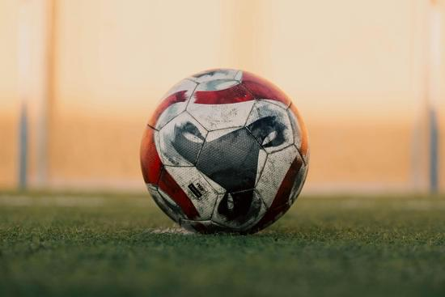

El Rey de los Deportes
Publicado el por Josué

El deporte es una parte importante de nuestra sociedad, ya que nos enseña valores y nos ayuda a mantenernos saludables. Entre todos los deportes destaca el fútbol, considerado el rey de los deportes por su popularidad y por la emoción que despierta en millones de personas alrededor del mundo.
A continuación, conoceremos más sobre este maravilloso deporte.
Pasión por el balón y las grandes competiciones
El fútbol no es solo un juego de once contra once en una cancha; es un fenómeno global que paraliza países enteros cada cuatro años durante la Copa del Mundo, y que reúne a millones de fanáticos frente a las pantallas cada semana en ligas locales e internacionales.
Reglas básicas y estructura del juego
El fútbol se juega entre dos equipos de 11 jugadores cada uno en un campo rectangular de césped. El objetivo principal es introducir el balón en la portería contraria respetando el reglamento estipulado por la IFAB (International Football Association Board).
- Tiempo de juego: Un partido oficial dura 90 minutos, divididos en dos tiempos de 45 minutos con un descanso de 15 minutos entre ellos.
- El fuera de juego (Offside): Regla táctica fundamental que impide que un atacante saque ventaja posicional por delante del último defensor al momento de recibir el pase.
- Faltas y sanciones: El uso de tarjetas amarillas (amonestación) y rojas (expulsión) permite a los árbitros mantener el juego limpio y sancionar infracciones graves.
"El fútbol es el deporte más importante de las cosas menos importantes de la vida."
— Jorge Valdano
Más información en SCRIBD